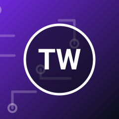

Tomasz Wieliczko
Datový inženýr a autor otevřených nástrojů pro zpracování dat
Staví datová potrubí pro městské dopravní podniky ve střední Evropě. Tvrdí, že nejlepší je takové potrubí, o kterém nikdo neví, protože prostě běží.
Vystoupení na festivalu (1)
do
Datové potrubí, které se nerozsype
Sobota 5. 6. · Terminal · Tomasz Wieliczko